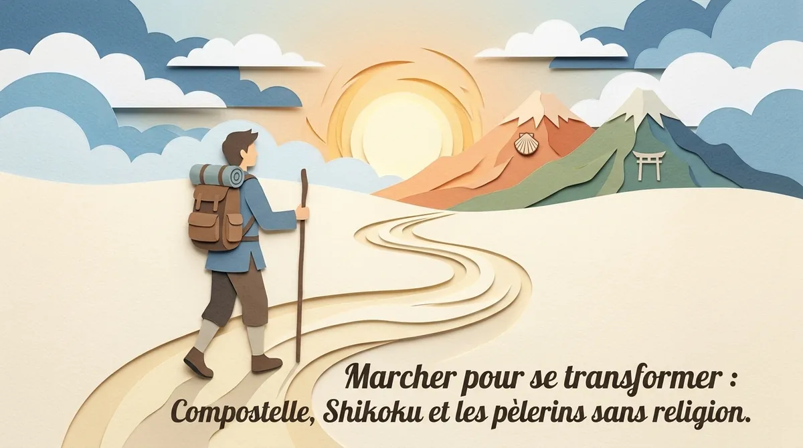
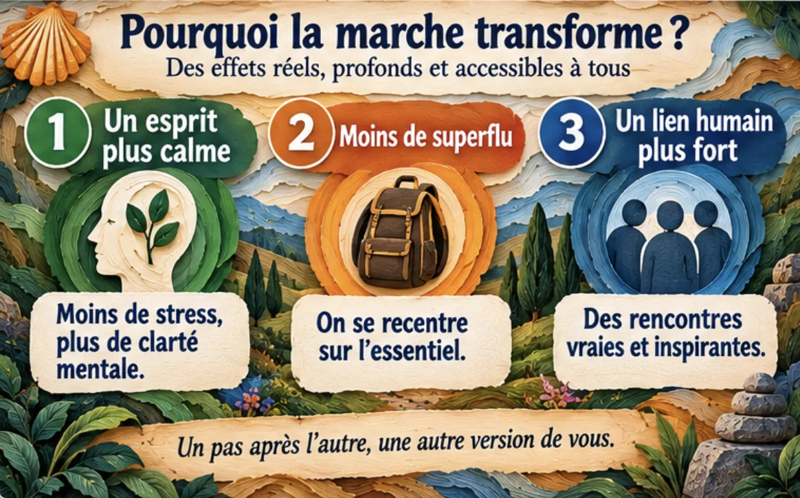
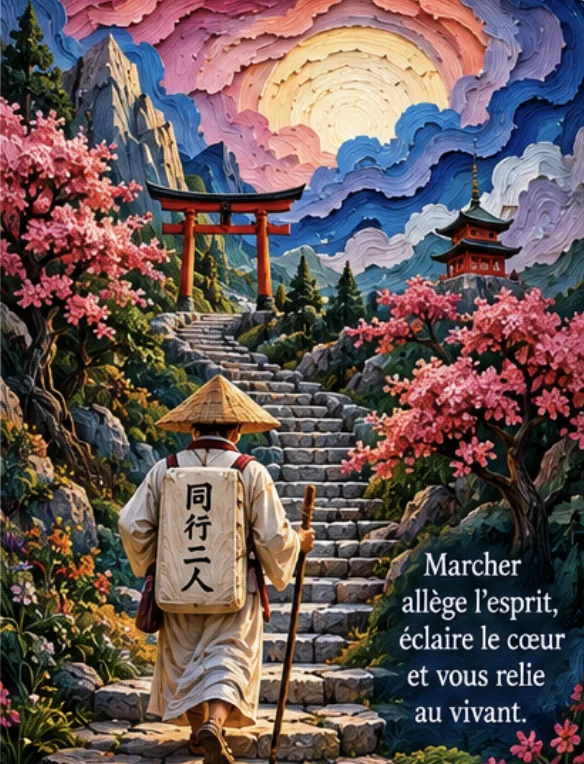
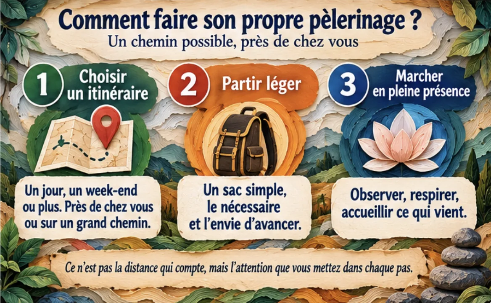

Marcher pour se transformer : Compostelle, Shikoku et les pèlerins sans religion

Un pèlerinage spirituel sans religion ? De Compostelle aux 88 temples de Shikoku, comment la marche lente devient aussi une quête personnelle.
Pourquoi continuer à marcher quand personne ne vous oblige à aller aussi lentement ?
Notre époque possède une obsession assez claire : arriver plus vite. Un trajet de dix heures devient huit, une réponse qui prenait une semaine devient instantanée, un repas peut arriver à domicile avant même que vous ayez réellement décidé ce que vous vouliez manger, et pourtant des milliers de personnes choisissent volontairement de prendre plusieurs jours ou plusieurs semaines pour parcourir à pied une distance qu’un véhicule pourrait franchir en quelques heures.
À première vue, le pèlerinage à pied ressemble donc à une anomalie logistique.
Pourquoi marcher ?
Parce que le but n’est justement pas seulement d’arriver.
Sur le Camino de Santiago, les itinéraires historiques convergent vers Saint-Jacques-de-Compostelle, où se trouve le tombeau traditionnellement attribué à l’apôtre Jacques le Majeur ; l’UNESCO rappelle que Compostelle devint dès le Moyen Âge l’un des grands centres de pèlerinage du monde chrétien, et que le Camino Francés lui-même s’étend sur environ 738 kilomètres à travers la péninsule Ibérique. (UNESCO World Heritage Centre)
Au Japon, le Shikoku Henro relie quant à lui 88 temples associés à la figure de Kūkai, ou Kōbō Daishi, fondateur du bouddhisme Shingon japonais ; selon les itinéraires retenus, le circuit pédestre complet représente environ 1 200 à 1 450 kilomètres et demande généralement plusieurs semaines. (ツーリズム四国)
Deux traditions très différentes.
Deux histoires religieuses très différentes.
Pourtant, une expérience corporelle étonnamment comparable :
- vous vous levez ;
- vous marchez ;
- vous mangez ;
- vous cherchez où dormir ;
- puis vous recommencez.
La vie, qui possédait hier quarante-sept priorités, en possède soudain quatre.
Voilà peut-être la première transformation du pèlerinage : la réduction radicale de la complexité quotidienne.
Le pèlerinage transforme le temps parce que le corps impose enfin son propre rythme
Lorsqu’on voyage en voiture ou en avion, l’espace disparaît presque entre le départ et l’arrivée. Vous partez d’une ville, vous vous enfermez dans une machine, puis vous réapparaissez plusieurs centaines de kilomètres plus loin.
À pied, rien ne disparaît.
Chaque kilomètre existe.
Une vallée prend deux heures.
Une montée possède une durée.
La pluie ne constitue plus un petit pictogramme météo, mais quelque chose qui entre progressivement dans vos chaussures.
Cette lenteur produit une expérience du temps extrêmement différente, particulièrement intéressante pour la méditation, l’introspection et les périodes de transition personnelle.
Au bout de plusieurs jours, le mouvement devient répétitif :
- pas ;
- respiration ;
- paysage ;
- pas.
Vous pouvez penser pendant une heure à une décision importante.
Puis ne plus y penser.
Puis la question revient le lendemain.
La marche fournit ainsi quelque chose que nos vies modernes accordent rarement : du temps mental non structuré suffisamment long pour qu’une pensée dépasse sa première couche.
Vous commencez peut-être le Camino en vous demandant :
« Dois-je quitter mon travail ? »
Après trois jours :
« Pourquoi est-ce que je veux partir ? »
Après sept :
« Qu’est-ce que j’essaie réellement de changer ? »
Après dix :
« Peut-être que mon problème n’est pas uniquement mon travail. »
Le pèlerinage ne possède évidemment aucun pouvoir automatique de révélation.
On peut marcher huit cents kilomètres et revenir avec exactement les mêmes idées.
Mais la répétition, l’effort et la diminution des distractions créent un contexte exceptionnel pour qu’une question cesse d’être simplement intellectuelle.
On la porte physiquement pendant plusieurs jours.

Compostelle sans être chrétien : quand le pèlerinage religieux devient aussi une quête personnelle
Le Camino reste historiquement et symboliquement un pèlerinage chrétien, et effacer cette dimension pour le présenter comme une simple randonnée de développement personnel serait historiquement absurde ; les routes, églises, hospices, croix, traditions et destination finale sont directement liés à cette histoire religieuse. (UNESCO World Heritage Centre)
Mais les motivations contemporaines des marcheurs sont beaucoup plus diverses.
On rencontre des personnes qui marchent :
- par foi ;
- pour marquer une transition ;
- après une séparation ;
- après un deuil ;
- à la retraite ;
- pour relever un défi ;
- pour réfléchir ;
- ou simplement parce qu’elles ressentent le besoin de partir quelque temps.
C’est précisément ce qui rend le concept de pèlerinage sans religion intéressant.
Un pèlerinage n’est peut-être pas uniquement défini par ce en quoi vous croyez.
Il peut également être défini par la manière dont vous vous déplacez.
Vous quittez volontairement un environnement familier.
Vous acceptez une contrainte.
Vous traversez plusieurs étapes.
Vous dépendez davantage du monde extérieur.
Vous arrivez à un lieu possédant une signification.
Puis vous revenez.
Cette structure est très différente d’un week-end touristique.
Le pèlerin ne demande pas seulement :
« Qu’est-ce que je vais voir ? »
mais souvent :
« Dans quel état vais-je arriver ? »
C’est une nuance considérable.
Vous pouvez photographier la cathédrale de Compostelle après être descendu d’un taxi.
Ou la regarder après trente jours de marche.
Architecturalement, c’est le même bâtiment.
Psychologiquement, ce n’est probablement pas le même lieu.

Shikoku : 88 temples et l’étrange sensation de ne jamais marcher complètement seul

Le pèlerinage de Shikoku possède sa propre logique et ne doit surtout pas être transformé en « Compostelle japonais ». Il est profondément lié à Kūkai, figure majeure du bouddhisme japonais, et à un réseau de 88 temples dont la forme actuelle s’est progressivement constituée au cours de l’histoire ; les documents mentionnent le pèlerinage à partir du Moyen Âge, tandis que le circuit précis des 88 temples semble s’être structuré surtout entre la fin du XVIe et le XVIIe siècle. (ツーリズム四国)
Une formule traditionnelle particulièrement belle accompagne le pèlerin :
dōgyō ninin, « nous deux voyageons ensemble ».
Le second compagnon est Kōbō Daishi.
Même lorsque le pèlerin marche physiquement seul, la tradition lui rappelle donc symboliquement qu’il ne l’est jamais totalement ; le premier temple, Ryōzenji, est aujourd’hui encore présenté comme le point de départ habituel pour ceux qui suivent l’ordre classique des 88 temples. (ツーリズム四国)
Le circuit est aussi remarquablement répétitif.
Entrer dans un temple.
Se purifier.
Prier ou réciter selon sa pratique.
Recevoir éventuellement un sceau.
Repartir.
Puis recommencer.
Ce qui pourrait sembler monotone constitue précisément l’un des mécanismes du pèlerinage.
Lorsque la structure extérieure devient prévisible, les variations intérieures deviennent plus visibles.
Aujourd’hui :
impatience.
Demain :
fatigue.
Le lendemain :
émerveillement.
Puis ennui.
Puis gratitude.
Le pèlerinage n’est pas une succession permanente de révélations spirituelles accompagnées par une lumière dorée.
Une grande partie consiste probablement à avoir mal aux pieds.
Et c’est peut-être mieux ainsi.
Une spiritualité qui fonctionne uniquement lorsqu’on est parfaitement confortable risquerait d’avoir une durée de vie assez courte.
Pourquoi marcher peut changer quelque chose même sans croire à une transformation mystique
La marche possède plusieurs caractéristiques particulièrement intéressantes pour le bien-être mental : activité physique modérée, exposition à des environnements naturels ou variés, diminution potentielle du temps d’écran, rythme répétitif et possibilité de réflexion non interrompue.
Mais il faut éviter la formule magique :
« Marchez trente jours et vous reviendrez transformé. »
Certaines personnes reviennent profondément changées.
D’autres surtout très bronzées et avec une collection impressionnante d’ampoules.
La transformation dépend également de ce que vous faites de l’expérience.
Un pèlerinage peut fonctionner comme un rite de passage volontaire.
Avant :
une ancienne situation.
Pendant :
un espace intermédiaire où les routines sont suspendues.
Après :
la réintégration dans la vie quotidienne.
Cette structure explique pourquoi les pèlerinages attirent particulièrement pendant :
- deuil ;
- séparation ;
- reconversion ;
- retraite ;
- changement de pays ;
- crise existentielle.
Lorsque l’ancien monde ne correspond plus tout à fait et que le nouveau n’est pas encore défini, marcher offre une activité suffisamment concrète pour porter cette période d’incertitude.
Vous ne savez peut-être pas ce que vous allez faire de votre vie.
Mais aujourd’hui, vous savez quoi faire :
aller jusqu’au prochain village.
Parfois, c’est largement suffisant.

Le micro-pèlerinage : créer une journée de marche qui ne soit pas simplement une randonnée

Vous n’avez évidemment pas besoin de quarante jours disponibles pour utiliser certains principes du pèlerinage.
Choisissez une destination possédant pour vous une signification :
- chapelle ;
- monument ;
- forêt ;
- tombe d’un proche ;
- bord de mer ;
- sommet ;
- lieu lié à votre enfance.
Partez à pied depuis suffisamment loin pour que l’arrivée demande réellement un effort.
Avant le départ, écrivez une seule question.
Par exemple :
« Qu’est-ce que je veux laisser derrière moi ? »
Pendant la première moitié de la marche, ne cherchez pas la réponse.
Marchez simplement.
Pendant la deuxième, laissez la question revenir si elle revient.
À l’arrivée, restez dix minutes sans téléphone et écrivez trois phrases :
Ce que je pensais en partant.
Ce que j’ai compris en marchant.
Ce que je vais faire en revenant.
Voilà votre micro-pèlerinage.
Pas besoin de prétendre reproduire Compostelle ou Shikoku.
Vous utilisez simplement leur intuition fondamentale :
certaines réponses ont besoin d’une distance physique avant de devenir claires.
Le pèlerinage nous rappelle finalement qu’il existe une différence entre savoir intellectuellement que la vie avance et ressentir cette avancée dans son propre corps.
Pendant plusieurs jours, le monde se réduit à quelques mètres de chemin devant vous.
Vous n’avez pas besoin de connaître tout l’itinéraire.
Seulement le prochain pas.
Cliché ?
Oui.
Mais après mille kilomètres, certains clichés obtiennent le droit d’être pris au sérieux.
Questions fréquentes
Peut-on faire Compostelle sans être croyant ?
Oui. Le Camino reste historiquement un pèlerinage chrétien, mais de nombreux marcheurs contemporains ont aussi des motivations culturelles, personnelles ou introspectives ; respecter l’histoire religieuse du chemin reste essentiel.
Combien mesure le pèlerinage de Shikoku ?
Le circuit des 88 temples représente environ 1 200 kilomètres selon l’itinéraire pédestre présenté par le tourisme officiel de Shikoku, certaines estimations détaillées dépassant 1 400 kilomètres selon les variantes. (ツーリズム四国)
Pourquoi la marche aide-t-elle à réfléchir ?
Elle réduit potentiellement les distractions, apporte une activité répétitive et laisse de longues périodes de pensée non structurée, tout en ajoutant les bénéfices généraux de l’activité physique et de l’exposition à l’environnement.
Faut-il partir plusieurs semaines pour vivre un pèlerinage ?
Non. Une journée de marche volontaire vers un lieu significatif peut déjà reprendre les éléments essentiels : intention, déplacement, effort, arrivée et retour.
Pratiquer avec l’application
Envie de pratiquer plutôt que de lire ?
Tout ce que décrit cet article se pratique dans MeditaDream, application de méditation gratuite : 129 méditations guidées et 17 mondes immersifs en français, sans abonnement, sans publicité, sans compte, et tout fonctionne hors ligne.
✦ Découvrir l'application gratuite